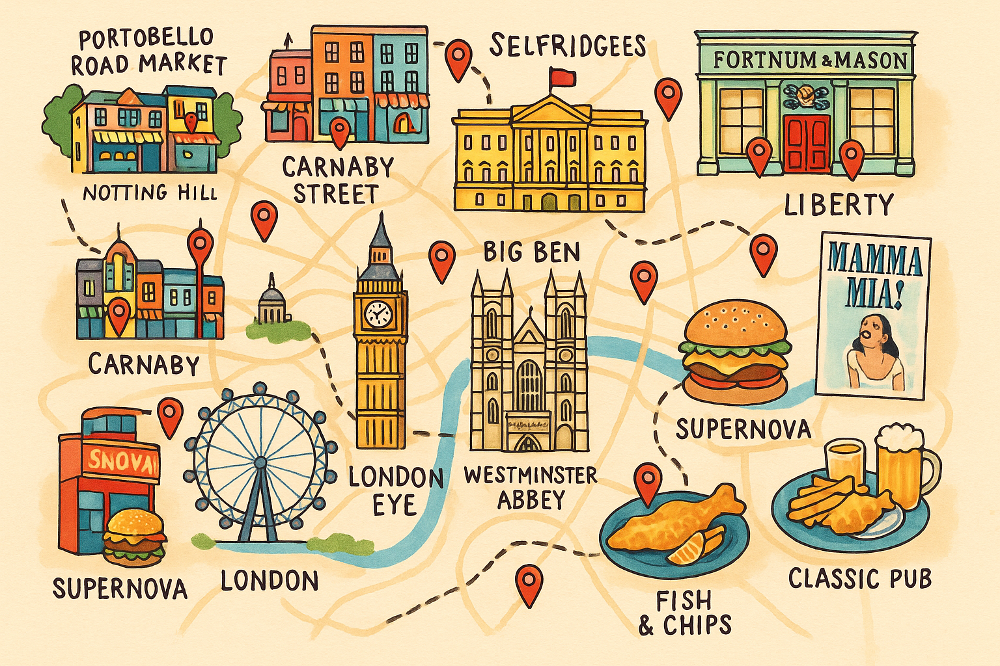
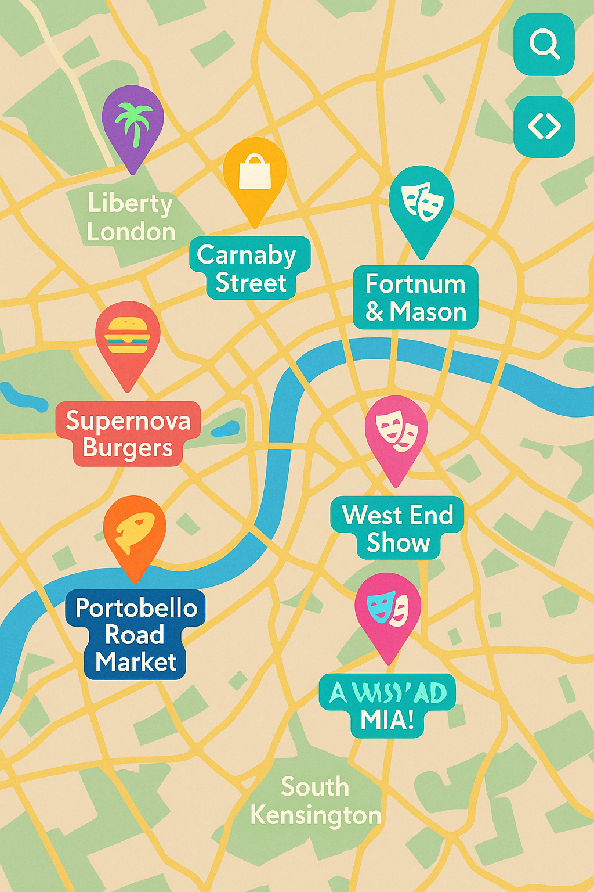
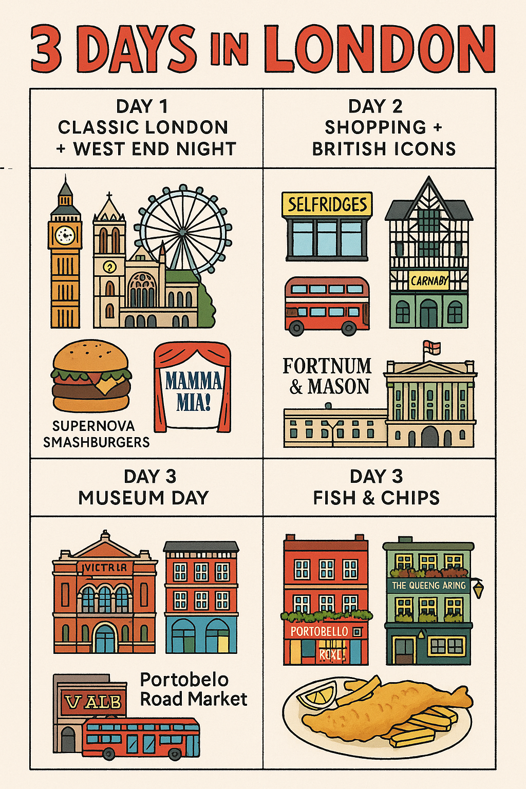

Will ChatGPT be the perfect tour guide?
Usually before trips, I spend a lot of time on the web planning the perfect itinerary. I take into consideration every neighborhood, sight, park, restaurant, and place I want to see and really make the effort to coordinate a schedule that allows me to see everything. Last semester I studied abroad in London, England, and made multiple weekend itineraries every time I had a visitor. Knowing what I know now, I want to see if chatGPT can do better than me!
What will ChatGPT depict as the perfect weekend in London?

The Conversation with ChatGPT4o
Prompt
Hi! I am going to london next weekend and need help planning a 3 day itinerary. here are some guiding points:
- staying in south kensington / gloucester road area
- definitely want to check out selfridges and fortnum and mason
- want to try Supernova smashburgers and the best fish and chips at a classic pub
- want to watch a west end show
the rest is up to you!
Response
Yay, how exciting!! London is such a blast—here’s a 3-day itinerary that mixes your must-dos with some iconic sights, a few hidden gems, and easy routes from South Kensington:
🗓 Day 1: Classic London + West End Night
Morning:
- Grab a coffee & quick bite at Gail’s Bakery near Gloucester Road to start your day.
- Head to Westminster: see Big Ben, Westminster Abbey, and the Houses of Parliament.
- Walk over Westminster Bridge for a great view/photo op of the London Eye (you can ride it if you want, but it’s a bit touristy).
Lunch:
- Supernova Smashburgers in Soho — it’s walkable from Westminster (about 25 mins) or a short tube ride.
Afternoon:
- Stroll around Covent Garden — great vibes, shops, street performers.
- Explore Seven Dials for cool boutiques and coffee spots.
Evening:
- Dinner at a gastropub near Covent Garden (The Ivy Market Grill is fun, but if you want a more classic pub, The Lamb & Flag is iconic).
- Catch a West End show! Book in advance—recommendations:
- Mamma Mia (feel-good vibes)
- Cabaret (immersive experience)
- Les Misérables (classic and powerful)
🗓 Day 2: Shopping + British Icons
Morning:
- Breakfast at Muriel’s Kitchen in South Ken.
- Take the tube to Oxford Street → Start at Selfridges and explore the flagship.
- Walk down to Liberty London (gorgeous Tudor-style store) and Carnaby Street.
Lunch:
- Pop into Dishoom Carnaby for modern Bombay comfort food in a gorgeous space.
Afternoon:
- Head to Fortnum & Mason (Piccadilly)—take your time on every floor!
- If you love tea, book an afternoon tea there or just enjoy their ice cream parlour or café.
- Then walk through St. James’s Park and up to Buckingham Palace.
Evening:
- Dinner in Soho or Chinatown—try Kiln for Thai or BAO for modern Taiwanese buns.
🗓 Day 3: Museum Day + Fish & Chips
Morning:
- Start your day with a walk to the Victoria & Albert Museum (literally in your neighborhood!). Option to also visit Natural History Museum next door.
Lunch:
- Grab lunch at the V&A café (surprisingly stunning and good) or head to Notting Hill for a change of pace.
Afternoon:
- Explore Portobello Road Market (especially if it’s Saturday), or just wander Notting Hill’s pretty streets.
Late Afternoon / Early Dinner:
- Head to a classic fish & chips pub:
- The Golden Hind in Marylebone (great and no frills)
- The Seashell of Lisson Grove (well-known, big portions)
- The Queen’s Arms in South Ken (cosy and local!)
Evening:
- If you’re up for it, end your trip with a cocktail at Sky Garden (free but requires a reservation) or drinks at The Churchill Arms—a pub covered in flowers and filled with Thai decor.
Would you like an interactive map with everything pinned, or maybe a cute PDF version of this itinerary for your trip? 😊
Prompt
an interactive map sounds great!
Response
Here’s your custom interactive map with all the main locations from your itinerary: Interactive Map
Included pins:
- Selfridges London
- Fortnum & Mason
- Supernova Smashburgers Soho
- Lamb & Flag Pub
- Covent Garden / Seven Dials
- Victoria & Albert Museum
- Natural History Museum
- Portobello Road Market
- The Golden Hind (fish & chips)
- The Seashell of Lisson Grove (alt fish & chips)
- The Queen’s Arms South Ken (closer option)
- Sky Garden
- The Churchill Arms
- Dishoom Carnaby
- Liberty London
- Muriel’s Kitchen
- Gail’s Bakery Gloucester Road
- West End Theatre District (general pin)
Prompt
Thank you! Now a cute pdf version?
Response

My reflection
I was very pleasantly surprised with this one! I think the LLM did a stellar job with the itinerary. Maybe I am biased because I was a huge Gail’s fan all semester, but I am so glad it was included! It hit many hotspots and areas in London I would include in an itinerary of my own. Of course there are a few more things I would’ve included that are more specific to me and things I LOVED during my time in London (King’s Road, Pavillion Road, Shoreditch, the Boltons, St. Yeghiche Armenian Church, Elizabeth Street, etc.) but for a general itinerary, it really fit in everything I asked for and more! I will definitely use ChatGPT’s help when planning future trips!
